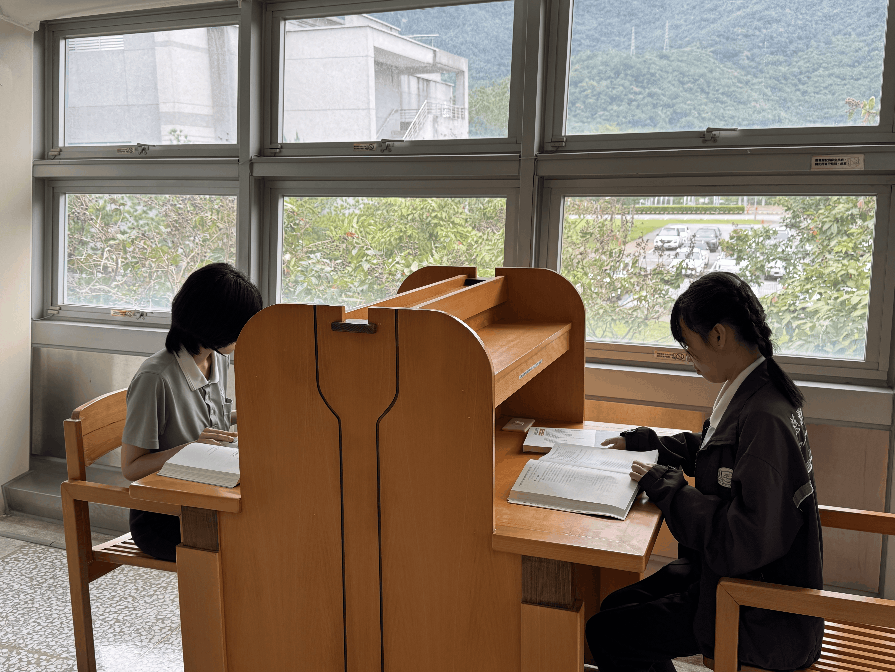
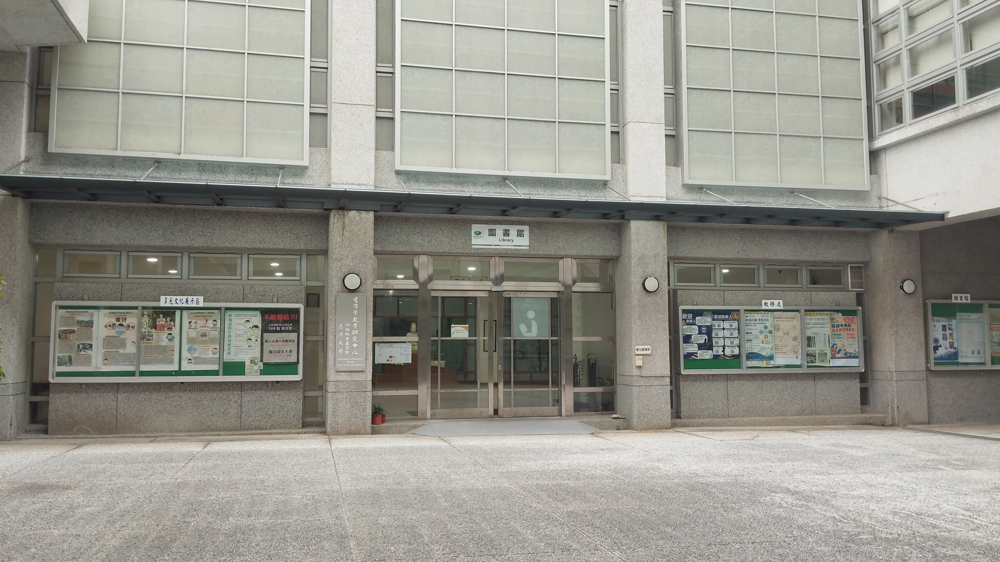
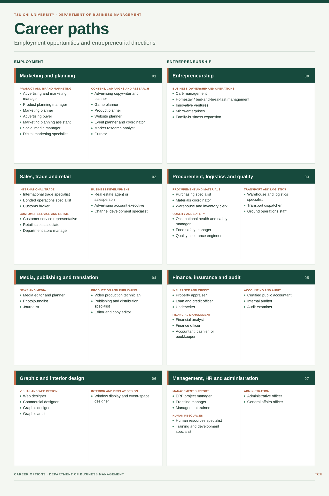
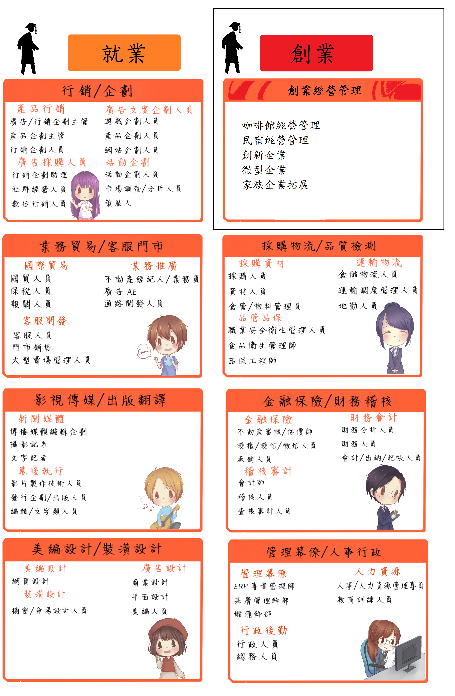

01
A broad view of management拓展經營管理視野
Explore the department’s four major course areas, then connect business foundations with social innovation and sustainable management.從系所四大課程領域建立商管基礎，進一步認識社會創新與永續管理。
Explore department news, faculty, course plans, student projects, and career information.認識系所消息、師資、課程規劃、學生專題與職涯發展。
Tzu Chi University · Department of Business Management慈濟大學 · 經營管理學系
Business management connects people, organizations and communities. At Tzu Chi University, students explore the field through four major course areas, department features, student development, and a focus on social innovation and sustainable management.經營管理連結人、組織與社會。慈濟大學經營管理學系以四大課程領域、系所特色與學生發展為基礎，並重視社會創新與永續管理。
A department in practice在實作中學習管理
01
Explore the department’s four major course areas, then connect business foundations with social innovation and sustainable management.從系所四大課程領域建立商管基礎，進一步認識社會創新與永續管理。
02
Case discussion, presentation practice, the department’s café practice classroom and smart-store environment bring ideas closer to everyday work.透過個案討論、簡報練習、系上咖啡館實習教室與智慧商店情境，讓管理概念連結實際工作。
03
Student projects, activities and internships help students connect their studies with career exploration and future opportunities.透過學生專題、活動與實習，將所學與職涯探索及未來發展連結。
Study · Meet · Make學習 · 交流 · 實踐
A glimpse of Tzu Chi University in Hualien. These photos show campus and study spaces, not department-only facilities.花蓮慈濟大學校園一景。照片呈現校園與學習空間，並非系所專屬設施。


0105
Find your next step探索下一步
News · Events · Notices新聞 · 活動 · 公告
Keep up with department announcements, opportunities and events.掌握系所公告、學習機會與活動消息。
Department stories · Notices系所消息 · 公告
Browse department achievements, lectures, field learning and notices. Open any item to read it here.瀏覽系所榮譽、講座、校外教學與公告，點選項目即可在本站閱讀。
History · Courses · Features
The official introduction presents department history, four major study areas, department features, and student development through visual guides.
Full-time faculty
Roster and contact details follow the official faculty page. Adjunct and part-time lecturers are listed on the original page.
Admission-year course plans
The official curriculum page lists admission course plans for academic years 111–115.
Graduation requirement
TIMS marketing, iPAS, retail and chain management, project management, finance, real estate, and related professional certificates.
Microsoft Office Specialist, Google Ads, Google Analytics, Adobe ACA/ACP, and business and marketing certifications.
Use the official rule and points table for the complete approved list and current details.
Official internship documents
The original HTML showed a download button that only displayed an alert. The official department site provides these internship policy documents directly.
Employment · Entrepreneurship就業 · 創業
Explore roles in marketing, management, sales, logistics, media, design, finance, and entrepreneurship.認識行銷、管理、業務、物流、媒體、設計、財務與創業等職涯方向。


Projects · Learning · Community專題 · 學習 · 交流
Projects and activities bring together international learning, entrepreneurship, design-thinking workshops, campus life, and community-based practice.系上學習成果涵蓋國際交流、創業實作、設計思考工作坊、校園活動與地方實作。
These official images load from the department site when online. Download the linked
images into images/official/ beside this HTML for offline viewing.連線時可由系所網站載入官方圖片。若要離線瀏覽，請下載連結中的圖片並存入與 HTML 同層的
images/official/ 資料夾。
Department policies系所規章
The department lists twelve current policies. English titles below are translations for reference; the linked official documents are in Chinese.本系列有十二項現行規章。下列英文名稱僅供參考，官方文件請以連結中的中文版本為準。
| No.序號 | Regulation title規章名稱 | Official document官方文件 |
|---|---|---|
| 1 | Regulations Governing Department Affairs Meetings慈濟大學經營管理學系系務會議設置辦法 | PDF ↗ |
| 2 | Professional Certificate Graduation Requirement Regulations慈濟大學經營管理學系專業證照畢業門檻辦法 | PDF ↗ |
| 3 | Regulations Governing the Curriculum Committee慈濟大學經營管理學系課程委員會設置辦法 | PDF ↗ |
| 4 | Regulations Governing the Faculty Evaluation Committee慈濟大學經營管理學系教師評審委員會設置辦法 | PDF ↗ |
| 5 | Regulations Governing the Admissions Committee慈濟大學經營管理學系招生委員會設置辦法 | PDF ↗ |
| 6 | Guidelines for International Student Admission慈濟大學經營管理學系外國學生入學要點 | PDF ↗ |
| 7 | Implementation Guidelines for Double Majors and Minors慈濟大學經營管理學系雙主修及輔系修讀施行要點 | PDF ↗ |
| 8 | Rules for Internal Transfer to the Department慈濟大學經營管理學系校內轉系細則 | PDF ↗ |
| 9 | Regulations Governing the Student Internship Committee慈濟大學經營管理學系學生實習委員會設置辦法 | PDF ↗ |
| 10 | Student Internship Regulations慈濟大學經營管理學系學生實習辦法 | PDF ↗ |
| 11 | Student Internship Operating Guidelines慈濟大學經營管理學系學生實習作業要點 | PDF ↗ |
| 12 | Self-Evaluation Regulations慈濟大學經營管理學系自我評鑑辦法 | PDF ↗ |
Department message board系所交流留言板
Share questions, announcements, and ideas with the department community.與系所師生分享問題、公告與想法。